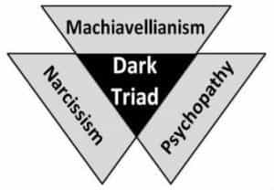
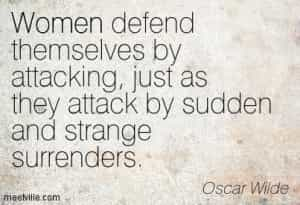
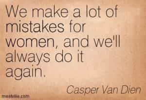
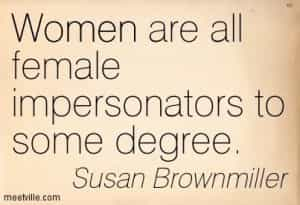

< < < Back
How To Identify The Dark Triad Female – Return Of Kings
You see, my poor fellow, the hearts of women and she-cats are abysses that neither men nor toms will ever fathom. – Henry Murger
Neomasculine principles have saved many men by enlightening them about the true nature of women. Depending on their personal level and use of game with prior experiences with women, these men are usually able to sidestep the pitfalls and power games that usually entails gender interaction today.
However with feminism and modern gyno-centric laws, men also have to commonly contend with the rising threat of dark triad women—predatory women who game men ruthlessly for their own goals without any remorse or conscience, even if it may result in the destruction of men.
Understanding the rise of the Dark Triad in today’s societies

The dark triad is a group of three personality traits: Narcissism, Machiavellianism and Psychopathy. The term “dark” implies that these traits have malevolent qualities, and have been associated with a callous-manipulative interpersonal style, to “use people for personal advantage.” They grant high social status, tight control over interpersonal social dynamics, and elicit intense sexual attraction.
Scientifically, women are attracted to dark triad men – usually because they are adept at projecting high status and authority to women, and seem to be better at exuding physical appeal. But with the masculinization of modern women, these traits have also become synonymous with modern female behavior.
Dark triad women: their types and their game

Basically there are two types of the “Lucifer’s daughter”: virginal, and non-virginal. Both types aim for power and leverage over men: the non-virgin type primarily uses guile and sex to obtain her control, while the virginal type uses her virginity, her pseudo-femininity, and the promise of sex to subvert men. Countering both requires solid game.
The non-virginal type (the more formidable one) combines the guile of her virginal sister with irresistible sexual depravity – as she stops at nothing to achieve her aims. Often beginning as a virginal type in her teens, she “upgrades” her traits through the psychologically hardening ride on the cock-carousel which accentuates her psychopathy and manipulative skills. However, careful observation and her past promiscuity can alert men about her.
The virginal type (similar to a cock-tease, but with malice) is no rookie at gaming men either, for she learns her game from observing the game of her sexually “upgraded” sisters. Usually young, “conservative”, occasionally “religious” or of high status, her game on men is basically an exemplification of Law 20 from The 48 Laws Of Power:
DO NOT COMMIT TO ANYONE
It is the fool who always rushes to take sides. Do not commit to any side or cause but yourself: By maintaining your independence, you become the master of others playing people against one another; making them pursue you.
Furthermore, her game combines:
-
Law 5 – So much depends on reputation-guard it with your life : Her hymen (which she guards fervently) is the cornerstone of her power over (idealizing) men
-
Law 32 – Play to people’s fantasies: She manufactures romantic fantasies in men’s minds
-
Law 34 – Be royal in your own fashion, act like a king to be treated like one: How she (superficially) carries herself will often determine how she would be treated: In the long run, appearing vulgar or common will make people (and men) disrespect her
- Law 41: Work on the hearts and minds of others – Using her show of superficial “civility”, and pseudo-submissiveness , she endears herself to unsuspecting men who would function as her loyal pawns
This type knows that by allowing men to sexually possess her, she’d lose “respect” and leverage over them. By not committing her affections and withholding sex, she gains power from male attention and frustrated desire, as they only try harder to win her over, unable to leave her orbit but never getting any closer to her.
Playing the virgin queen, she gives men hope of owning her undefiled pussy someday, but never delivers on the satisfaction. When she finally “sexually” upgrades her game later to the non-virginal version, her manipulative skills are irresistible for men to handle (except for a man with solid game).
This type is more likely to play the “victim card” to escape culpability or malign and subvert a man, for she knows that others would usually fall for and believe her impeccable ruse of chaste femininity readily. Her game doesn’t hurt a man sexually who has game and options – but sexually thirsty men with no game nor red pill knowledge to identify her usually fall prey.
In “traditional” societies untouched by modern permissiveness, the chances of encountering both types are almost equal – as non-virginal types there are more likely to pose as chaste. And with increasing influx of women in the workforce today, it’s common to encounter such women there too.
The Dark Triad office female
These women can represent a greater threat than men when it comes to blindsiding men professionally – for they are increasingly not averse to flirting to distract and neutralize their male competition at work, but can also be willing to use their sexuality to propel their professional climb to the top.
The simplest way to analyze a woman’s character and intentions at work is to observe what she actually does, and not simply believe what she says or pretends to act as. However, this wisdom has been often discarded repeatedly by men either due to feminist social conditioning, or being blinded by the appeal of such women, or sexual thirst.

There are some signs which can hint of a female dark triad professional rival who may try to potentially blindside you in the future:
1.Your professional competence suddenly attracts or repels her to you inexplicably. Either she perceives you as a threat, or views you enviously as competition – which must be neutralized effectively through “love” or a plot later.
2.She tries to get you to open up – while randomly revealing little information about herself. She’s trying to probe and document information which she can use to malign your reputation later.
3. She has a history of screwing up men’s lives – personally or professionally. Either possibility suggests a manipulative, broken, untrustworthy woman worth steering clear of.
4. She has used her body to get where she is at presently. If this is credible info, then know that she could already be controlling her own workplace alliance of men. If this predatory woman is actively interested in you, then she could be planning to add you to her prey list, and if you would resist, she would probably not hesitate to professionally blindside you.
Conclusion

With rising numbers of socially indoctrinated herds of dark triad women, it shouldn’t be surprising to note the exaggerated levels of distrust in men who’ve been scarred by them.
The solution to counter these women is the red pill and game, or acquiring dark triad traits oneself. Ignorance is not an option when dealing with such women—no matter how powerful and resourceful a man might consider himself to be.
Read Next: 11 Ways To Avoid Being Blindsided At Work


{kind=link}
{kind=link}
{kind=link}
{kind=link}
{kind=link}
{kind=link}